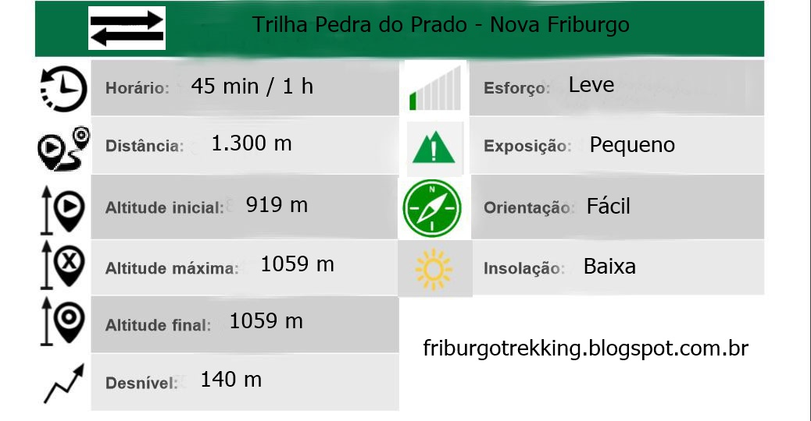

Informações e dicas sobre trilhas, montanhas e escaladas.
Autor: Fillipe Assis
Pedra do Prado
A Pedra do Prado também conhecida como Pedra do Santo André está localizada no distrito de
Conselheiro Paulino no bairro de Santo André na cidade de Nova Friburgo.
Trilha curta, rápida com dois trechos íngremes. Atualmente utilizada para descida de Downhill.

Não possui pontos de água.
Existe área para estacionamento no início da trilha.